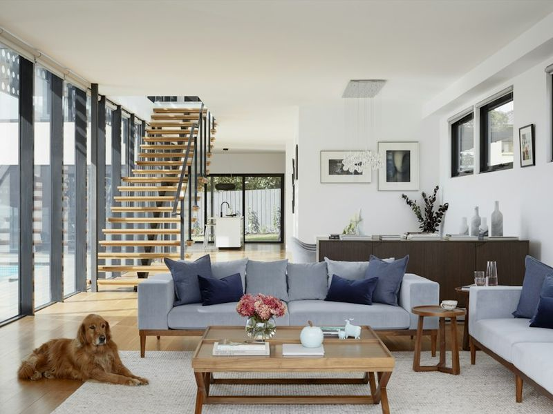
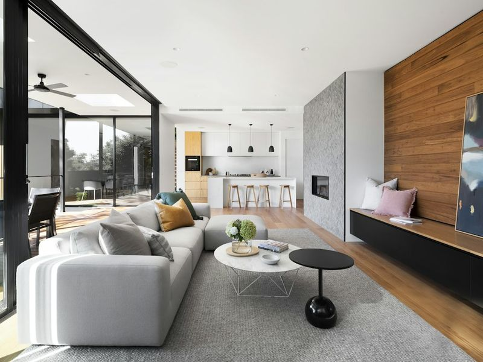
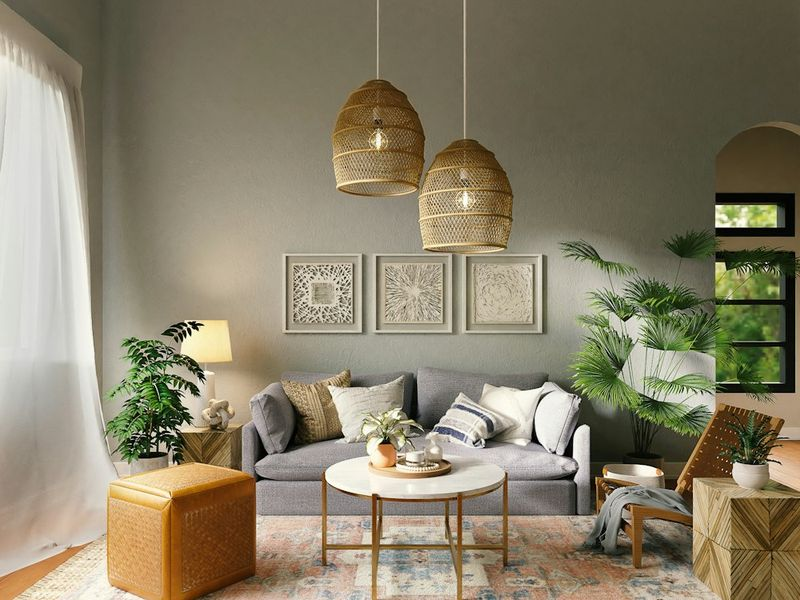
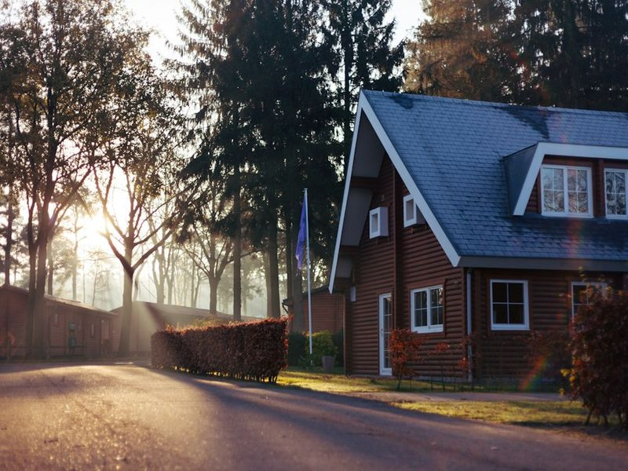
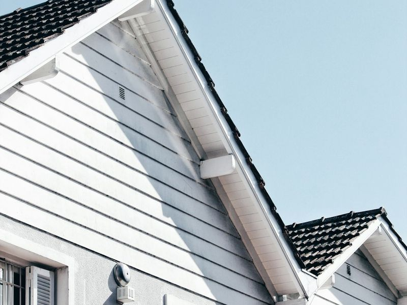
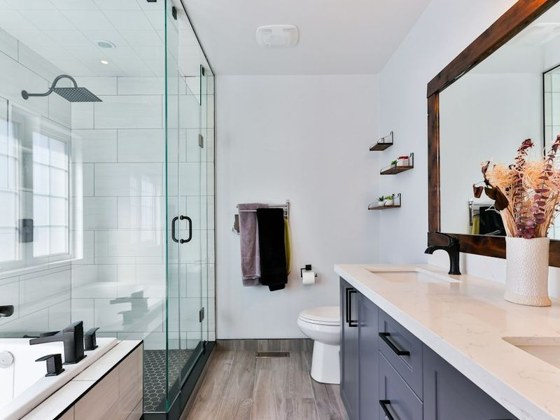
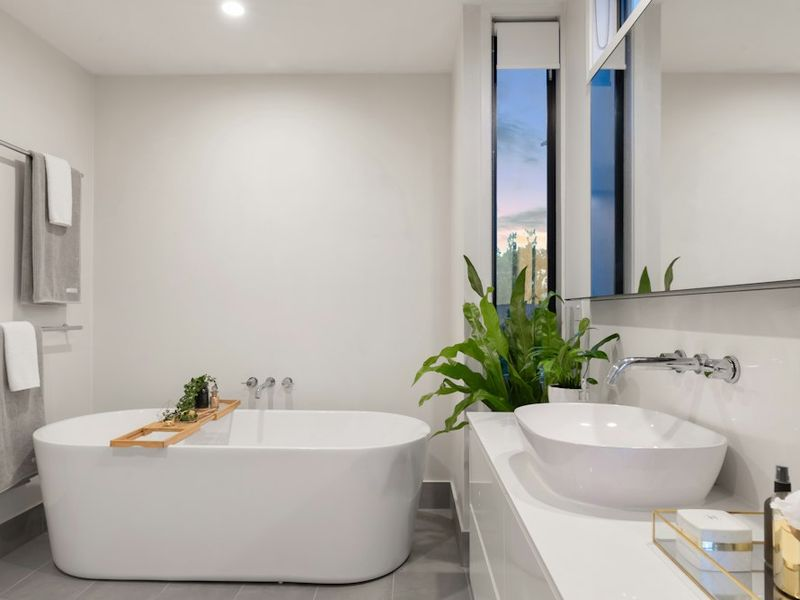
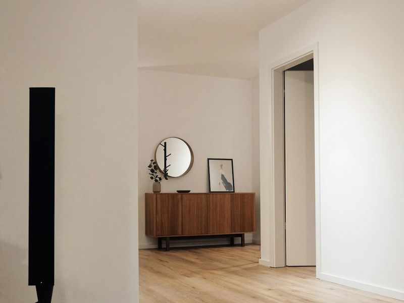
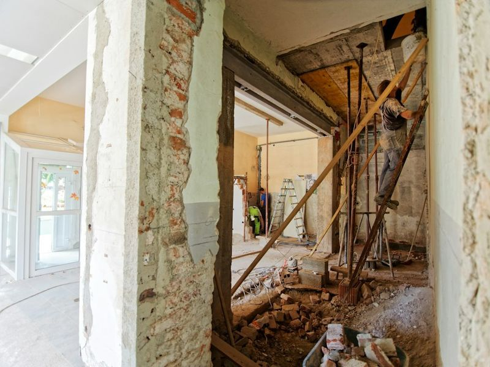
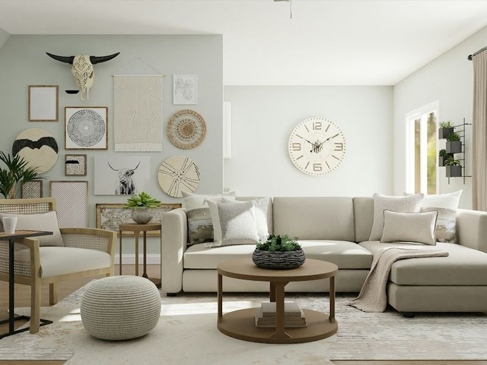

Unsere Projekte
Ein Querschnitt durch unsere Arbeit — Komplettsanierungen von Wohnungen und Häusern, Badezimmer und einzelne Arbeiten. Vysočina und Prag.
9 Projekte · Klicken Sie auf ein Foto, um es zu vergrößern


3-Zimmer-Wohnung, Jihlava

2-Zimmer-Wohnung, Prag 9

4-Zimmer-Wohnung, Třebíč

Einfamilienhaus, Havlíčkův Brod Ferienhaus, Žďár nad Sázavou


Reihenhaus, Pelhřimov

Badezimmer, Prag 4

Badezimmer, Jihlava

Decken und Verputz, Velké MeziříčíEin Projekt im Detail
Wie eine Sanierung in der Praxis aussieht
Ein Beispiel anhand eines konkreten Auftrags — damit Sie wissen, was Sie erwartet.
3-Zimmer-Wohnung, Jihlava — Plattenbau, 68 m²
Die Eigentümer kauften die Wohnung im Originalzustand aus den 1980er-Jahren. Sie wollten die Küche zum Wohnzimmer hin öffnen, alle Leitungen erneuern und den Sanitärkern loswerden.
Was wir gemacht haben
- Abbruch des Sanitärkerns und der nichttragenden Wand zwischen Küche und Wohnzimmer
- Neue Wasser-, Abwasser- und Elektroleitungen inklusive Verteiler
- Gemauertes Bad mit bodengleicher Dusche und separatem WC
- Abgehängte Trockenbaudecken mit eingelassenen Leuchten
- Feinputz auf allen Wänden, Vinylboden in der gesamten Wohnung
- Neue Innentüren und Umfassungszargen
Das Ergebnis
Fertig in 7 Wochen, Budget eingehalten, keine Mehrarbeiten. Die Eigentümer zogen eine Woche nach der Übergabe ein.


Möchten Sie mehr sehen?
Gerne zeigen wir Ihnen eine laufende Baustelle, damit Sie sehen, wie wir arbeiten. Rufen Sie einfach an.